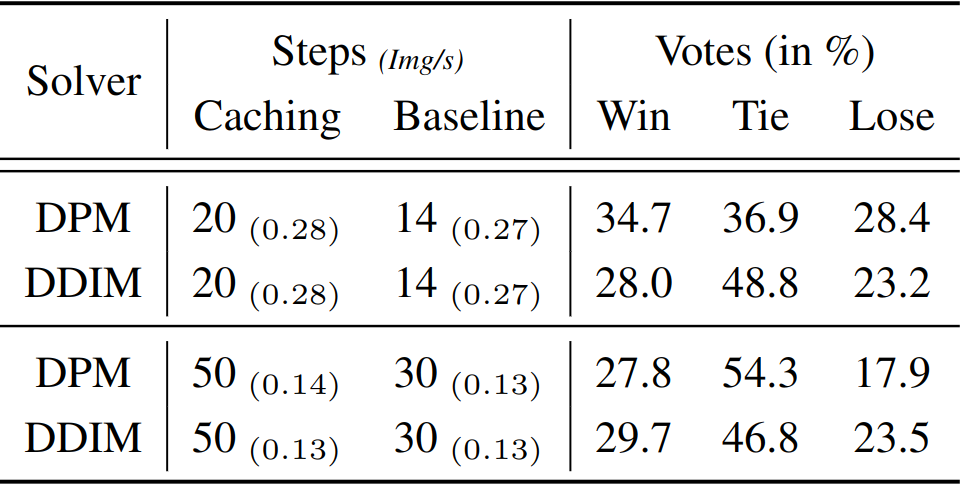
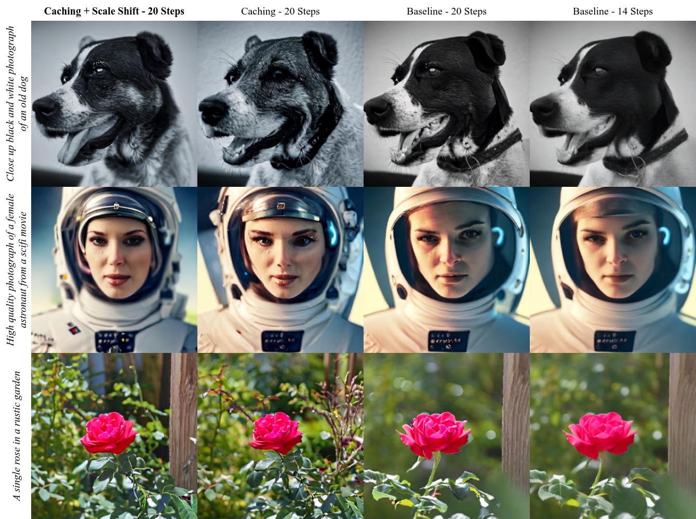
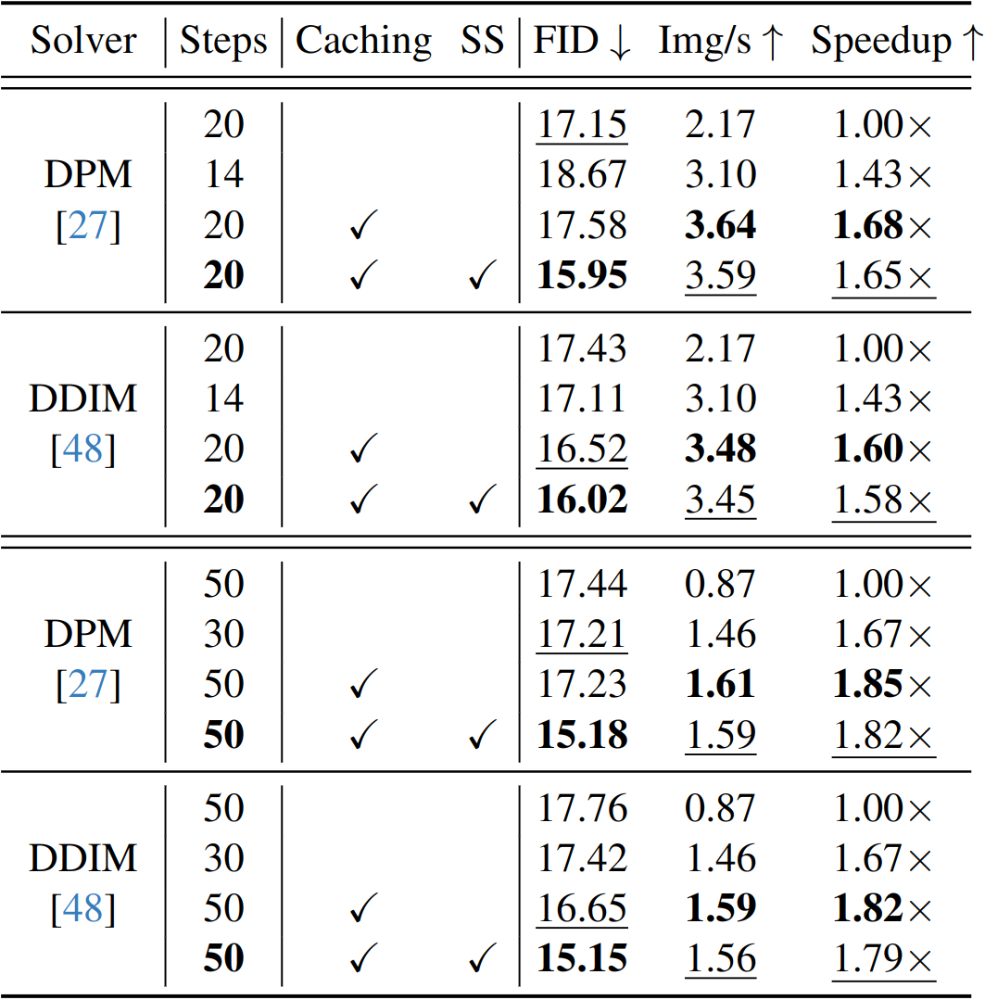

Results
EMU + Caching
Given a fixed computational budget, we can perform more denoising steps and obtain higher-quality results. Here, we compare EMU with our caching approach at 20 steps vs. 14 steps with the default setup. With identical inference speed, our caching technique produces finer details and more vibrant colors.
A magical portal opening to reveal a hidden realm of wonders.

A tranquil garden with cherry blossoms in full bloom under a full moon.
An ancient castle on a cliff overlooking a vast, mist-covered valley.
A yellow tiger with blue stripes.
A time-traveling wizard riding a mechanical steed through a portal, leaving trails of stardust in their wake.
A floating city in the clouds where airships navigate through tunnels of light, and majestic creatures soar in the skies.
Quantitative Results
We conduct a human evaluation study on the visual appeal of images generated with either the configuration with caching or the baseline without caching. We always compare configurations that have the same latency.
LDM + Caching
We show different configurations for the common LDM architecture. The caching configurations at 20 steps and the baseline configuration at 14 steps have the same latency. The baseline with 20 steps is about 1.5x slower. Our method often provides richer colors and finer details. Through our scale-shift adjustment, we avoid artifacts that are visible when naively applying block caching.
Quantitative Results
For different solvers, we test our caching technique against baselines with 1) the same number of steps or 2) the same latency. In all cases, our proposed approach achieves significant speedup while improving visual quality as measured by FID on a COCO subset removing all faces (for privacy reasons). Legend: SS = Scale-shift adjustment, Img/s. = Images per second.
